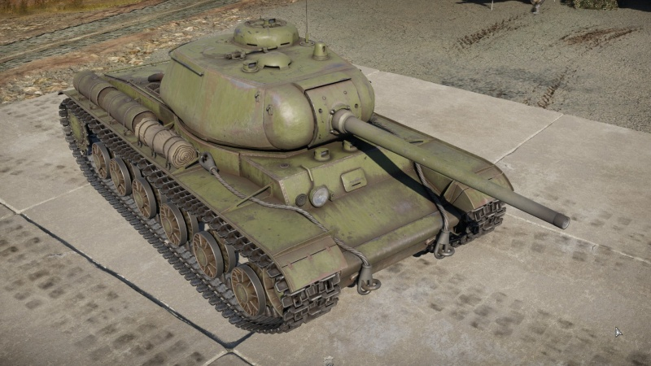

The KV-85 has a weak side and frontal armor to most Shermans and Panzers, it is bad but its main gun is one of the best with a 145mm penetration on flat armor and 110mm on curved armor.
KV-85 also has some good range, the shells on the tank can go over 2000m and still penetrate, but only some rounds. The tank carries 3 types of ammo, a HE shell, which is used only on infrantry, the Armor Piercing shell which can pierce even the tiger but can do little damage, maybe only kill 1 crew member and for last the HE penetration shells, they have lower penetration value then the Penetration shells but still they can do more damage to the crew. When they pierce an enemy tank it automaticly becomes emobile because of the big explosion.